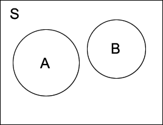

Some implications from the axioms
We now give a few results that can be proved using only set theory and the three axioms of probability.
Probability of an event not happening
P(not A) = 1 − P(A)
The two events A and (not A) are mutually exclusive — it is impossible for both A and (not A) to simultaneously occur. Therefore
P(A or (not A)) = P(A) + P(not A)
However the event "A or (not A)" includes all possible outcomes and is therefore the complete sample space, S. Therefore
P(A) + P(not A) = P(S) = 1
so
P(not A) = 1 − P(A)
Many results can also be explained using Venn diagrams. These represent the whole sample space by a rectangle and events by shapes drawn in it. For example, the following diagram represents two events, A and B, that are mutually exclusive since their circles do not overlap.

Results about probabilities are equivalent to the corresponding equations about the areas in Venn diagrams. For example, the theorem
P(not A) = 1 − P(A)
is equivalent to
since P(S) = 1 from the first axiom.
The next result extends the third axiom to events, A and B, that are not mutually exclusive
Probability that one of two events happens
For any two events, A and B
P(A or B) = P(A) + P(B) − P(A and B)
We use Venn diagrams to explain the result. Adding the areas for A and B double-counts the joint area (A and B) so it must be subtracted.